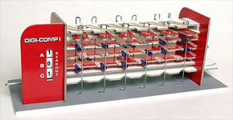
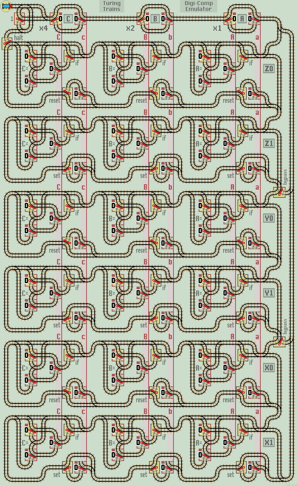

Digi-Comp Emulator
The Digi-Comp1 is a small mechanical computer. It acts as a 'finite state machine' with 3 boolean variables, A, B and C. It can be programmed to compute different logic operations, such as addition, subtraction, count up or down and logic gate simulation. You can get a kit to build one yourself from Minds On Toys. |
 The Digi-Comp1 |
Here is a train track layout that emulates the Digi-Comp finite state machine. It can be included in a train track layout as any other function. The layout can be extended 'left' to accommodate more values and 'down' for additional sections.
How it works
The Digi-Comp has a main register with 3 Boolean values labelled A (x1), B (x2) and C (x4). Each value is held as a group of vertically linked lazy points. These correspond to the original Digi-Comps horizontal flip-flops. They can be set as inputs or read as outputs depending on the program.
A second group of vertically linked lazy points hold 3 'internal' values which the Digi-Comp works with. These are labelled a, b and c (small letters). They are copied into A, B and C at the end of each cycle.
To begin, all lazy points are reset to 0. Manual points begin in their 'don't care' position. Some are set by the operator to program the layout (blue border).
The train first updates the internal values with the values of A, B and C (usually to reset all to 0). This is necessary as an internal value which is not used, may update a main value incorrectly.
The train then passes down through three identical horizontal sections Z, Y and X. Each section tests the values of A, B and C, according to the settings of the manual points. If a test fails, the train returns back along the same line. If all tests pass, the train updates internal values to either 0 (upper half of each section) or 1 (lower half of each section).
When all sections have been traversed, the train returns via the right hand track to update A, B and C with the newly calculated internal values. Note that two manual points, at the end of section Z1 and Y1, can be used to bypass lower sections.
Programs
Each program is a list of manual points to be 'set'. They appear with a blue outline. All other manual points are set to their default positions. Start the train to run the program.
Blinker B. Toggles B between 0 and 1. Section Z only.
XOR gate. Set gate inputs A and B and read output on C. Uses 'one shot' halt. See Logic Gates for more info and truth table.
Count Up and rollover from 111 to 000. Runs forever... or use 'one shot' halt to increment the counter.
Count Up to 7 and halt (return train). Z0 detects '111' as a halt condition.
| 
|
| Click layout to pause/run train | Click points to switch 0/1 | Click start circle to reset train/points |
| Lazy points switch between upper 0 or lower 1 branch lines Trains arriving on a branch line switch the point to that line |
|
| Sprung points allow branch line trains to join the main line All main line trains go straight ahead and never 'branch off' |
Extra manual points
It is important that computational layouts avoid infinite loops, which prevent the train returning to its start position. Especially if the layout is called as a function from a larger circuit (a computer maybe). Therefore, this layout provides a couple of manual 'halt' points not present on the original Digi-Comp. If left in their default positions, they have no effect and can be ignored.
The first can be used to return the train after a single cycle of the Digi-Comp. This is useful for simulating logic gates or testing circuits one cycle at a time. It can also be used to pause the train to allow main values to be manually changed without possible data glitches.
The second halt point allows section Z0 to detect a specific halting condition.
Synchronous v Asynchronous
If an internal value is updated more than once, then in an asynchronous train track layout it's the last (lower) update that prevails. The original Digi-Comp is synchronous, so this would represent a lock-up condition where a value is set to both 0 and 1 at the same time. The asynchronous nature of train layouts can be used to simplify some programs.
Also see Finite State Machine (image only).